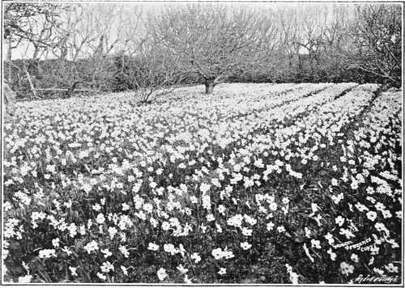
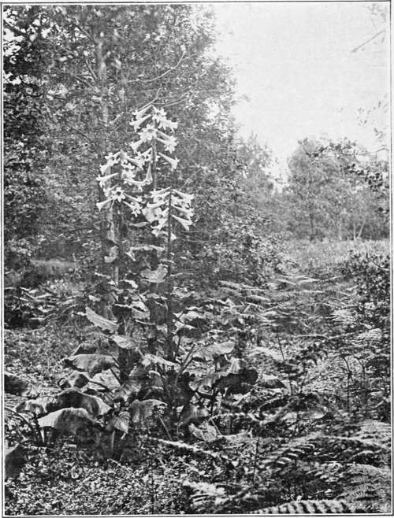

Nineteenth Century. Part 7
Description
This section is from the book "A History Of Gardening In England", by Alicia Amherst. Also available from Amazon: A History Of Gardening In England.
Nineteenth Century. Part 7
" But fair the exiled palm tree grew Midst foliage of no kindred hue ; Through the laburnum's dropping gold Rose the light shaft of orient mould, And Europe's violets faintly sweet Purpled the moss-beds at its feet.
Strange looked it there ! the willow streamed Where silvery waters near it gleamed ; The lime-bough lured the honey bee To murmur by the desert tree, And showers of snowy roses made A lustre in its fan-like shade".
Mrs. Hemans.
Parts of Cornwall are so mild that many things will do well there which are considered as greenhouse plants in other parts of England. There are in that county some gardens that would astonish gardeners from less-favoured districts. Pengerrick, Menabilly, Heligan, Tregothuan, and Carclew are among the finest of these Cornish gardens. Camelias grow into fine trees, † and Sikkim Rhododendrons flower in the open-air, and Lapargerias will grow like ivy on sheltered walls. At Carclew, Rhododendrons Thomsoni, Hodgsoni, campylocarpum, argenteum, and many other tender varieties were covered with bloom last spring. In that garden there are many interesting plants thriving well, which are usually kept in green-houses in England. Choisya ternata, Embothrium coccineum, Phyllocladus rhomboidalis, Azara microphylla, are among the number, and Benthamias, the seeds of which were first sent home to England from Ceylon by Sir Anthony Buller, flourish: some of the original ones still grow in the garden at Heligan, where they were first planted. Still more favourable is the climate of the Scilly Isles, and lately this has been taken advantage of, for growing narcissi. Mr, Dorrien Smith started the industry, and within the last ten years it has been steadily increasing, and thousands of cut flowers are sent to the London markets. In the Islands in February there are acres of narcissi in bloom, which are picked and sent off to London. The illustration shows a field of Poets Narcissus, and there are also quantities of the polyanthus varieties grown. The daffodil is a flower which has come prominently into notice of late years. Each type has been enormously developed, some of the new Trumpet varities being of special beauty.*
* The Sub-tropical Garden. By W. Robinson. 2nd Edition, 1879. † Also in Hampshire and some other Southern and Western Counties.
Narcissus in the scilly isles.
The spring garden now is no longer only a few tulips and hyacinths bedded out, but these narcissi and many other bulbs such as Scilla siberica, Chionodoxa Luciliae or Tulipa silvestris, can be naturalized, and if planted in masses on grass, in glades, or on the edges of lawns, they will give a brilliant effect before the summer flowers have made their appearance, and can be mown over with the rest of the grass if necessary when their flowers are over. Bulb culture is a favourite pursuit in the manufacturing districts of north-west England. It is thought that the taste was carried thither by the Flemish weavers, who in earlier times had brought the love of these plants with them from the Low Countries, when they first settled in East Anglia, Essex and Kent. There is also the kind of spring garden which has been most successfully carried out at Belvoir. Not only are the beds filled with such things as " Forget-me-nots," Iris reticulata and Iris siberica, Silenes, Violas, Wall-flowers or Heuchera sanguinea, Aubretias, Cerastium tormentosum, but many Primulas, Anemones, Gentians, Cyclamens, and various alpines, are naturalized on a vast rock garden.
The idea of naturalizing plants in shrubberies, grassy banks and wild places, is also a new departure of the late nineteenth century. Mr. W. Robinson, by his works, the Wild Garden, and the English Flower Garden, has done more than any one to bring in the taste. By grouping flowers naturally in this way, fine picturesque effects can be obtained. It is the reverse of the " Landscape Gardening," which brought green undulations of park-like appearance up to the house, and banished the flower-garden ; it extends the flower-garden into the surrounding country. In practising the art of wild gardening, that is, naturalising of plants, which are not natives, but which are hardy in our climate, and if once planted will take care of themselves, there is no need to banish the "formal garden." The formal garden certainly seems to be the most suitable to place near a house, and its design should harmonize with the architecture. This kind of garden is necessary, if any tender plants, or those that require special care and treatment are to be reared, but beyond this formal garden, and separated from it by some suitable enclosure, the wild garden, judiciously planted, proves a continuing source of interest and pleasure. The accompanying illustration of some giant lilies about ten feet high, shows one of the many effects such a "wild garden" can produce. They are planted in a wood, and are spreading and thriving, and look quite in keeping with their surroundings. The low bushes in the background are varieties of cistus, all quite at home in the Surrey copse.* There is great scope for wild gardening on the banks of streams and lakes, and even in the water itself. The new hybrid water lilies raised by Marliac in France, and coming to us from that country, are one of the latest additions to gardens, and in a few years their worth will be recognized.† The numbers of lilies imported from Japan have added yet another feature to nineteenth-century gardens, and the varieties of hardy Rhododendrons and Azaleas are further precious contributions from that country.
* Ye Narcissus, a Daffodil Flower. By Barre, 1884.
LILIES IN WILD GARDEN.
Continue to: